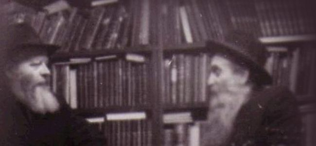

הרב ב. גורודצקי
“באם היהודים בגרוזיה שומרים על זהותם היהודית ועל הרגש וההתנהגות הדתית למרות 50 שנות תעמולה ורדיפה הקומוניסטית - אני משוכנע שזו תוצאה של המאמצים הגדולים שהשקיע הרב לויטין” * “רוב השוחטים באנגליה, צרפת, איטליה, מדינות סקנדינביה ובלגיה הם בוגרי הישיבות שלנו” * “כאשר העלייה ממרוקו היתה גבוהה מאוד, הסכימ
“באם היהודים בגרוזיה שומרים על זהותם היהודית ועל הרגש וההתנהגות הדתית למרות 50 שנות תעמולה ורדיפה הקומוניסטית - אני משוכנע שזו תוצאה של המאמצים הגדולים שהשקיע הרב לויטין” * “רוב השוחטים באנגליה, צרפת, איטליה, מדינות סקנדינביה ובלגיה הם בוגרי הישיבות שלנו” * “כאשר העלייה ממרוקו היתה גבוהה מאוד, הסכימו כל הנוגעים בדבר שהצעירים המגיעים ממוסדותינו במרוקו הם המרכיב הטוב ביותר ושילובם בארץ ישראל היה הרבה יותר קל מזה של יהודים אחרים ממרוקו” * “זהו תיאור תמציתי מאוד של הפעילות שלנו בחו”ל, שכן אחרת זה ידרוש מאות עמודים” * מה ליובאוויטש עושה?

בתקופה שלאחר מלחמת העולם השנייה הקים אדמו”ר הריי”צ את ‘לשכת ליובאוויטש האירופית’ ומינה את הרב בנימין אליהו גורודצקי לנהל את הארגון; עליו הוטל לדאוג לכך שכל צרכי הפליטים ימולאו וכן ליישב אותם מחדש בקהילות חב”ד בעולם. עבודה זו נעשתה בסיוע כספי של ארגון הג’וינט.
עם זאת, ליובאוויטש לא הסתפקה במתן תמיכה גשמית לפליטים, ומיד החלו בהקמת תשתית של ארגונים להפצת אור היהדות בכל מקום בו יש צורך בכך. הרב גורודצקי היה אחראי על פיתוח פעילות חב”ד באירופה, במזרח התיכון ובצפון אפריקה.
בפרק זה מציגים אנו סדרת מסמכים משנת תשל”ו המפרטת חלק מהעבודה האדירה שנעשתה באירופה ובצפון אפריקה באותה תקופה, עם ציון הערים השונות בהם פעלו השלוחים ומוסדותיהם בחסות הלשכה ובתמיכת הג’וינט.
המסמכים מסכמים יותר מששים שנה שחב”ד עבדה יד ביד עם הג’וינט. שיתוף פעולה זה החל כבר במלחמת העולם הראשונה כאשר הג’וינט שלח כסף להמשפיע הדגול הרב שמואל לויטין שכיהן אז כשליח אדמו”ר הריי”צ בגאורגיה (גרוזיה).
מסמכים מרתקים אלה מופיעים בארכיון הג’וינט (שעבר דיגיטציה ועלה על האינטרנט הודות למענק מד”ר ג’ורג’ט בנט וד”ר ליאונרד פולונסקי). רוב המסמכים בתרגום מאנגלית.
התזכיר שהיה צריך להיות בן מאות עמודים
ביום י”ז טבת תשל”ו הגיש הרב גורודצקי למשרדי הג’וינט תזכיר בן שלושה עמודים “על פעולות ליובאוויטש בגולה”, שכלל סיכום של רוב הפעילויות המאורגנות על ידי לשכת ליובאוויטש האירופית והשלוחים:
התנועה החסידית של חב”ד נוסדה לפני כמאתיים שנה על ידי הרב זלמן מלאדי, עיירה קטנה ברוסיה הלבנה שהתפרסמה בקרב יהודים בכל העולם מאחר והרב נקרא הרב זלמן מלאדי.
תנועה זו ידועה היטב בקרב העם היהודי בגלל הספרים רבים, כולל מחקרים היסטוריים, שפורסמו עליה. לכן איני חושב שיש צורך להתייחס כאן להיסטוריה שלה. מטרת תזכיר זה היא להציג את ההיבטים השונים של פעילות תנועת חב”ד ויחסיה עם הג’וינט בששים השנים האחרונות.
כבר מתחילת הקמתה התבלטה התנועה החסידית של חב”ד בכך שחסידיה הונחו ליישם ולתרגל את הדת בכל פרט ופרט של חייהם, כולל החיים החברתיים והכלכליים, כמו עזרה ליהודים להיות בעלי מלאכה או חקלאים או עובדים בקואופרטיבים בתעשייה. כך יכלו חסידי חב”ד ותלמידי הישיבה להתפרנס בכבוד ובה בעת לקיים את המצוות.
פעילות זו הביאה את תנועתנו במגע עם הג’וינט, כאשר זה האחרון החל לפעול ברוסיה לאחר מלחמת העולם הראשונה. בשנת 1913 [1916] הועבר הסיוע הכספי הראשון של הג’וינט ליהודים ברוסיה לישיבת ליובאוויטש בגרוזיה להרב שמואל לוויטין, הרב הראשי של גרוזיה ונציג הרבי מליובאוויטש לאותו אזור (הוא גם חמי, אשר נפטר בניו יורק בתחילת 1975 [1974] בגיל 94, פעיל, ערני ומודע עד לרגע האחרון). הרב לויטין עבד במשך שנים רבות עם יהדות גרוזיה, ויצר שם רשת של מוסדות דתיים וחברתיים, שגידלו דורות של רבנים, מורים, שוחטים ושאר פעילים דתיים. באם היהודים בגרוזיה שומרים על זהותם היהודית ועל הרגש וההתנהגות הדתית למרות 50 שנות תעמולה ורדיפה הקומוניסטית, אני משוכנע שזו תוצאה של המאמצים הגדולים שהשקיע הרב לויטין והסיוע הכספי שניתן על ידי הג’וינט לפני שנים רבות.
ככלל, עובדה מקובלת היא שתנועת ליובאוויטש היא הארגון הדתי היהודי היחיד ברוסיה הקומוניסטית הפועל בתחום הדתי–תרבותי והחברתי במשך שנים כה רבות. בתחילה בדרך חוקית ולאחר מכן לא–חוקית. הרבי הקודם מליובאוויטש, וכן חמי, וכן אני בעצמי ועוד מחסידי ליובאוויטש, בזמן זה או אחר נשלחו לכלא או לסיביר, אבל הפעילות שלנו נמשכה ונמשכת גם ברוסיה עד עצם היום הזה. הייתי מעורב באופן ישיר בעבודה זו ב–52 השנים האחרונות ואני בהחלט יכול לומר שכל זה נעשה בסיוע הכספי היקר של הג’וינט.
לאחר מלחמת העולם השנייה
הניסיון שלנו בעבודה בלתי–חוקית ברוסיה סייע לנו להוציא כ–4,000 חסידי חב”ד מרוסיה ב–1946 למחנות העקורים בגרמניה ואחר כך לצרפת. בצרפת סיפקנו להם את האמצעים החומריים לחיות, ועזרנו להם למצוא עבודה בהתאם ליכולותיהם. חלק מהם נעזרו ללמוד מקצועות ולפתוח מפעלים קטנים לסריגה, תפירה וכו’. אחרים, בהתאם לרקע שלהם ולחינוך התורני, מונו כרבנים, מורים, סופרים, שוחטים וחזנים במוסדות הדתיים השונים שלנו שנוצרו באותן שנים, ומאז הפכו מפורסמים בכל רחבי אירופה, כמו הישיבה בברינוא, סמינר למורות ובית הספר לבנות בית–רבקה ביער, רשת תלמודי תורה וגני ילדים בפאריס ובפרבריה, כמו גם בערי השדה הגדולות של צרפת, כמו ליון, מרסיי, טולוז וניס.
אני מאמין ששתי העובדות הבאות, בין היתר, ימחישו הן את סוג עבודתנו והן את שיתוף הפעולה ההדוק שלנו עם הג’וינט:
1. בשנת 1948 העניקה ממשלת אירלנד לג’וינט מתנה 3 מיליון פאונד של בשר לחלוקה בין היהודים במחנות העקורים ובארץ ישראל. בהקשר זה התעוררה בעיית מציאתם של שוחטים ורבנים כדי להתמודד עם הכשרת כמות גדולה זו של בשר. הג’וינט העניק לנו את העבודה הענקית הזאת, ואני ארגנתי קבוצה של 50 רבנים ושוחטים שהגיעו לאירלנד למטרה זו. יתר על כן, השתמשתי בהזדמנות זו כדי לשלוח עמם כמה תלמידי ישיבות ללמוד את המקצוע של שחיטה.
2. ב- 1949 או ב- 1950 קיבל הג’וינט כ- 1,200 ספרי תורה מגרמניה שהנאצים החרימו מיהודים בכל רחבי אירופה. שוב היו הסופרים שלנו אלה שהוטלה עליהם המשימה לבדוק את כשרות ספרי התורה האלה, ובמידת הצורך לבצע את התיקונים הדרושים, שכן לא היו סופרים אחרים באירופה בימים ההם. עבודתם אפשרה לג’וינט לחלק את ספרי התורה הללו בין הקהילות היהודיות בכל רחבי אירופה, ומספר מסוים נשלח לארץ ישראל.
הפעילות שלנו בצרפת שימשה גם קרש קפיצה לפעילות דומה במדינות אחרות, כמו ארץ ישראל, מרוקו, תוניסיה, העיר מלייה, מדריד, איטליה, טורקיה, מדינות סקנדינביה ואפילו אוסטרליה. בכל הארצות הללו המשכנו ועדיין אנו ממשיכים ברוב המקומות את הפעילויות הדתיות–תרבותיות וחברתיות (ובארץ ישראל - גם הכשרה מקצועית בכפר–חב”ד) הכוללות ישיבות, תלמודי תורה, בתי ספר לבנים, בתי ספר בית–רבקה לבנות, מרכזי נוער ומרכזי סטודנטים וכן מסעדה כשרה במדריד. בנוסף, בוגרי הישיבה שלנו שעלו למדינות כמו קנדה, אנגליה, איטליה, נורבגיה, שבדיה וכו’, תופסים משרות כמנהלים דתיים בקהילות ורוב השוחטים באנגליה, צרפת, איטליה, מדינות סקנדינביה ובלגיה הן בוגרי הישיבות שלנו.
עוד יצוין, כי בראשית שנות החמישים, כאשר העלייה ממרוקו היתה גבוהה מאוד, הסכימו כל הנוגעים בדבר שהצעירים המגיעים ממוסדותינו במרוקו הם המרכיב הטוב ביותר ושילובם בארץ ישראל היה הרבה יותר קל מזה של יהודים אחרים ממרוקו.
פרסומים
הפעילות שלנו בצרפת כוללת גם פרסום ספרים וחוברות בצרפתית בנושאים דתיים עבור המדינות דוברות צרפתית באירופה, צפון אפריקה, קנדה ועד לאחרונה גם עבור לבנון.
זהו ללא ספק תיאור תמציתי מאוד של הפעילות שלנו בחו”ל, שכן אחרת ידרשו מאות עמודים. עם זאת, אני מאמין כי זה מראה בבירור על תפקידה החיובי של תנועתנו בשמירת וחיזוק הרוח הדתית והערכים היהודיים בקרב יהודי אירופה, צפון אפריקה ומדינות אחרות.
אני רוצה לסיים ולהדגיש שוב, כי ההצלחה שהושגה בעבודתנו האדירה במדינות השונות נבעה בעיקר מהסיוע ומההבנה של הנהגת הג’וינט כלפי הארגון שלנו במשך כל השנים האלה, ועל כך אני באמת ובתמים אסיר תודה.
הרב ב. גורודצקי
המנהל הכללי של אירופה, ישראל וצפון אפריקה
רשימת הפעולות
לתזכיר צורפה רשימה קצרה של שני עמודים של כל הפעילויות החינוכיות שנעשו על ידי לשכת ליובאוויטש האירופית (מלבד תוכנית הסיוע לרוסיה, שאינה מופיעה מסיבות מובנות), אשר נתמכה על ידי הג’וינט:
הפעילות הדתית–תרבותית של תנועת ליובאוויטש כעת בעזרת הג’וינט
צרפת 1. ישיבה בברינוא עם אש”ל מלא, כולל בית ספר לשוחטים - 88 תלמידים. 2. סמינר למורות בית–רבקה ביער, עם 68 תלמידות. 3. בית–ספר יסודי ותיכון לבנות בית רבקה ביער עם אש”ל מלא - 102 תלמידות. 4. בית–ספר יסודי בפאריז - 69 תלמידים. 5. בית–ספר יסודי באובערוויליא - 85 תלמידים. 6. בית–ספר יסודי באורלי - 40 תלמידים. 7. רשת 46 תלמודי תורה אחה”צ בפאריז ובפרברים עם 985 תלמידים. 8. רשת 51 מרכזי נוער וסטודנטים בפאריז ובפרברים עם כ–1,000 משתתפים. 9. שני גני ילדים בפרברי פריז ובהם 45 ילדים. 10. בית–ספר יסודי בית רבקה בליון - 160 תלמידות. 11. מועדון נוער ומרכז לסטודנטים בליון עם כ 80 אנשים. 12. מועדון נוער ומרכז לסטודנטים במרסיי עם כ 70 אנשים. 13. מועדון נוער ומרכז לסטודנטים בשטרסבורג עם כ 50 אנשים. 14. מועדון נוער ומרכז לסטודנטים בטולוז עם כ 50 אנשים.
מרוקו 1. ישיבה בקזבלנקה, כולל בית ספר מקצועי לתפילין ולסופרים, עם אש”ל מלא - 46 תלמידים. 2. סמינר למורות בית–רבקה בקזבלנקה - 210 תלמידות, שרובן מקבלות אש”ל מלא. 3. בית–ספר יסודי בית–רבקה לנערות בקזבלנקה עם 318 תלמידות.
טוניסיה 1. ישיבה (בית ספר יסודי ותיכון לבנים) בתוניס - 205 תלמידים. 2. סמינר למורות בתוניסיה - 80 תלמידות. 3. בית–ספר תיכון לנערות בתוניסיה - 90 תלמידות. 4. שיעורי ערב בתוניסיה בהשתתפות 80 איש. 5. קורסים בקיץ עם כ 200 אנשים. 6. ישיבה עם אש”ל מלא בג’רבה - 115 תלמידים.
עיר מלייה 1. בית–ספר יסודי - 72 תלמידים. 2. שיעורי ערב עם נוכחות של כ 40 אנשים. 3. קורסים בקיץ בהשתתפות כ –80 איש.
נאמנותו של הרב גורודצקי
התזכיר של הרב גורודצקי הופץ בקרב ראשי הג’וינט, וביום ט”ו אדר א’תשל”ו אנו מוצאים את המכתב הבא מאת “חסיד ליובאוויטש ובמיוחד של הרב גורודצקי” מר תיאודור פדר (ג’וינט - אירופה) לסגן–נשיא הג’וינט, מר רלף גולדמן:
כחסיד של ליובאוויטש ובמיוחד של הרב גורודצקי אני מודיע שיש לי נטיה דעה קדומה לטובתו.
על אף שנראה שמכיוון שהג’וינט ביקשה דו”ח אזי באופן אוטומטי הוא ינסה לשיר את שבחנו, עם זאת במשך השנים רבות שעבדתי עם הרב, מאז שנות הארבעים, תמיד הייתה נכונות מצידו של הרב לתת לנו שורת תודה בולטת, באותיות גדולות ובדרך כלל בתחילת הדו”ח שלו. זאת, בניגוד למספר ארגונים אחרים בהם אנו תומכים, שנותנים לנו שורת תודה בסוף ובאותיות קטנות.
מה שהרב גורודצקי לא יכול לומר, אבל אני אומר זאת, הוא שהאמון והאמונה שיש לנו בו ובארגונו הוא לא פחות מאשר עם כל אחד ממשרדי הג’וינט והצוות. זוהי אכן מערכת יחסים ייחודית ביותר, ואחת שכל אחד מאתנו כאן מעריץ. אתה חייב לראות ולשמוע את זה בכדי להאמין.
זה לא אומר שאנחנו באופן אוטומטי מסכימים עם הרב כאשר הוא מגיע עם הפרויקטים שלו. נהפוך הוא, אנחנו תמיד במצב של דיון עם הרב; אבל הבנתו את הבעיות שלנו ואת החוקים שלנו מקלה עלינו להתמודד עם הארגון שלו.
ראלף, אם לא היית מבקש ממני הערות, לא היית מקבל את המכתב הזה. אז תשאל עוד…
פרסום ראשון: מכתבי–ברכה לחג הפסח
לקראת חג הפסח אנו מציגים לראשונה את מכתבי הרבי לארגון הג’וינט
לרגל חג הפסח בשנים תש”י ותשי”ב, ותגובת ראשי הג’וינט למכתבי הרבי
פסח תש”י
מכתבו של הרבי לד”ר יוסף שוורץ, יו”ר הג’וינט (תרגום חפשי מאנגלית):
יו”ד ניסן תש”י
ד”ר יוסף שוורץ
יו”ר מועצת המנהלים האירופית של ארגון הג’וינט,
ד”ר שוורץ היקר:
בהתקרב חג הפסח, חג הגאולה שלנו, אני שולח לך את מיטב איחולי לפסח כשר ושמח.
בדור שלנו, גלות ו”גאולה” הם שניהם מציאות מרה. אין אף אחד שמכיר יותר מכם את הנסיבות המחרידות של גלות וגאולת אחינו היהודים בזמננו.
ניתנה לך הזכות האלוקית לעזור להקל על הכאב והסבל של מאות אלפי אחינו. אני יודע עד כמה העריך מאוד חמי המנוח, הרבי מליובאוויטש הנערץ זכרונו לברכה, את עבודתך בתחום זה, והוא ראה בך ידיד אמיתי עם ראיית הנולד והבנה הן לצרכים החומריים והן הרוחניים של אחינו. אני משוכנע כי משאלותיו וברכותיו אליך, בעבודתך הציבורית וגם בחייך האישיים, ימשיכו לעמוד במקומם.
בדרישת שלום אישית,
בכבוד רב,
הרב מענדל שניאורסאהן
באסרו חג הפסח, כ”ג ניסן תש”י שלח ד”ר שוורץ את המכתב הבא לרבי (תרגום חפשי מאנגלית):
הרב שניאורסאהן היקר:
אני רוצה להודות לכם מאוד על מכתבכם הנדיב מ–28 במארס, שבו אתם מביעים את מיטב האיחולים לחג הפסח.
היתה לי הזכות הגדולה להכיר את חמיך המנוח, הרבי הקדוש מליובאוויטש, והיתה לי הערכה עמוקה ביותר לא רק לאישיותו אלא עבור העבודה הנפלאה והמעוררת שהוא עשה. התעניינותו בדברים המשפיעים על העם היהודי הייתה אוניברסלית ולא מוגבלת למדינה מסויימת או לקבוצה מסויימת. קהילת ישראל הפזורה ברחבי העולם היתה תחום העניין שלו ולקהילה זו הוא נתן את לבו הגדול, את נפשו ואת כוחו הבלתי–מוגבל. היתה לי הזכות להיות קשור אליו אפילו ממרחק הזה. תקוותי כי אותם קשרים נעימים, ששררו בין ארגון ליובאוויטש לבין עצמנו במהלך חיי חותנך, יימשכו גם בעתיד.
עם דרישת שלום ובברכה,
פסח תשי”ב
מכתבו של הרבי למר משה בקלמן, מנכ”ל הג’וינט (תרגום חפשי מאנגלית):
י”ג ניסן תשי”ב
ברוקלין 13, ניו יורק
מר בקלמן היקר:
חג הפסח המתקרב נותן לי הזדמנות נעימה לשלוח לך את ברכותיי ואת מיטב איחולי לפסח כשר ושמח.
הרב בנימין גורודצקי, שחזר לאחרונה לביקור קצר, דיווח לי באופן מלא על העניינים המשותפים לנו. בשובו [לאירופה] הוא ימסור לך דרישת שלום אישית ממני. בינתיים אני רוצה לנצל הזדמנות זו בכדי להבטיח לך את הכנות שלי ואת הערכתי על שיתוף הפעולה שלך, אשר אני סומך שימשיך מחיל אל חיל.
אני מאמין שהמסר לפסח המצורף בזה יעניין אותך.
עם דרישת שלום אישית ועם מיטב האיחולים לך,
בלבביות,
מ. שניאורסאהן
למכתב זה צורף תרגום לאנגלית של ה”מכתב כללי” לרגל חג הפסח תשי”ב, שנכתב בתאריך ראש חודש ניסן תשי”ב (המכתב בלה”ק הודפס באגרות קודש חלק ה’ עמ’ 277 ואילך).
באסרו חג הפסח, כ”ג ניסן תשי”ב השיב מר בקלמן לרבי:
הרב שניאורסאהן:
תודה רבה לך על ברכותיך החגיגיות. גם אני מקווה שנוכל להמשיך ולשתף פעולה עם עבודת הארגון למען האינטרסים המשותפים שלנו.
בברכה ובכבוד רב,